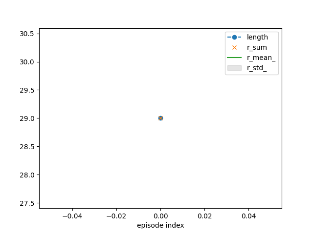
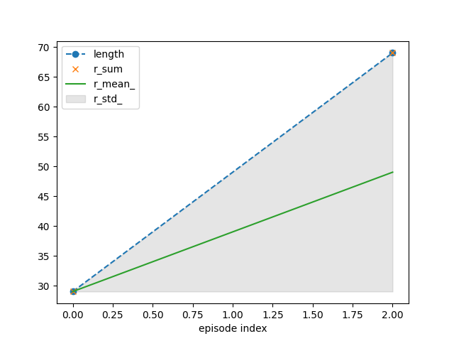
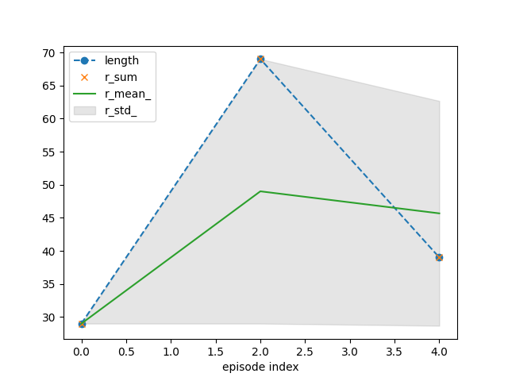
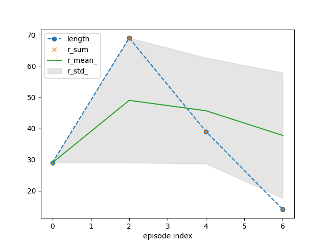
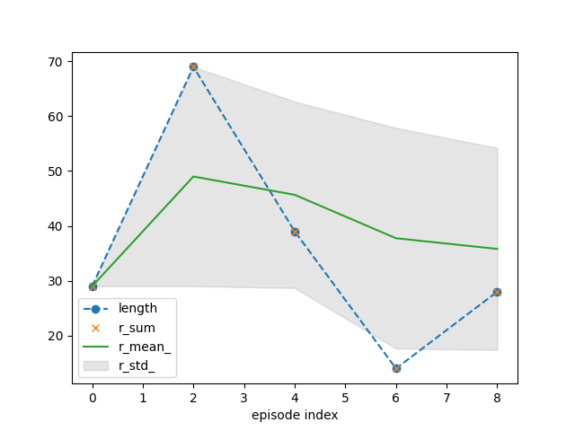
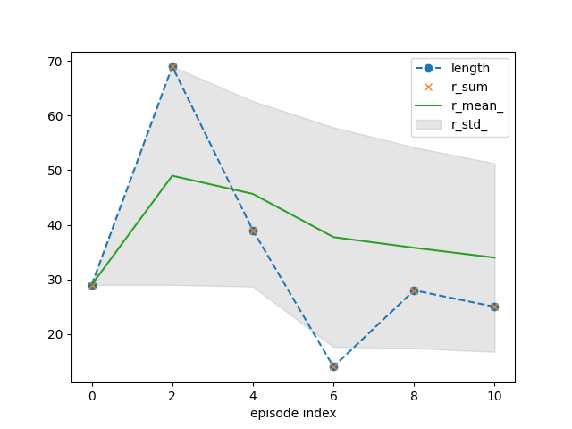

Note
Go to the end to download the full example code.
Basics of the RLDurham package
Imports
import gymnasium as gym
import rldurham as rld # Reinforcement Learning Durham package with helper functions
Simple gym workflow
# initialise environment
env = gym.make('CartPole-v1')
observation, info = env.reset(seed=42)
# run episodes
for episode in range(10):
observation, info = env.reset()
done = False
while not done:
action = env.action_space.sample() # random action
observation, reward, terminated, truncated, info = env.step(action)
done = terminated or truncated
# close environment
env.close()
RLDurham workflow
This is the workflow required for the coursework to ensure correct logging
# drop-in for gym.make that enables logging (use render_mode="rgb_array" to enable video rendering)
env = rld.make('CartPole-v1', render_mode="rgb_array")
# record statistics (returned in info) and videos
env = rld.Recorder(
env,
smoothing=10, # track rolling averages (not required for coursework)
video=True, # enable recording videos
video_folder="videos", # folder for videos
video_prefix="xxxx00-agent-video", # prefix for videos
logs=True, # keep logs
)
# make reproducible by seeding everything (python, numpy, pytorch, env)
# this also calls env.reset
seed, observation, info = rld.seed_everything(42, env)
# optionally track statistics for plotting
tracker = rld.InfoTracker()
# run episodes
for episode in range(11):
# recording statistics and video can be switched on and off (video recording is slow!)
env.info = episode % 2 == 0 # track every other episode (usually tracking every episode is fine)
env.video = episode % 4 == 0 # you only want to record videos every x episodes (set BEFORE calling reset!)
#######################################################################
# this is the same as above
observation, info = env.reset()
done = False
while not done:
action = env.action_space.sample() # Random action
observation, reward, terminated, truncated, info = env.step(action)
done = terminated or truncated
#######################################################################
if done:
# per-episode statistics are returned by Recorder wrapper in info
# 'idx': index/count of the episode
# 'length': length of the episode
# 'r_sum': sum of rewards in episode
# 'r_mean': mean of rewards in episode
# 'r_std': standard deviation of rewards in episode
# 'length_': average `length' over smoothing window
# 'r_sum_': reward sum over smoothing window (not the average)
# 'r_mean_': average reward sum per episode over smoothing window (i.e. average of `r_sum')
# 'r_std_': standard deviation of reward sum per episode over smoothing window
# InfoTracker turns these into arrays over time
tracker.track(info)
print(tracker.info)
# some plotting functionality is provided (this will refresh in notebooks)
# - combinations of ``r_mean`` and ``r_std`` or ``r_mean_`` and ``r_std_`` are most insightful
# - for `CartPole`, ``length`` and ``r_sum`` are the same as there is a unit reward for each
# time step of successful balancing
tracker.plot(r_mean_=True, r_std_=True,
length=dict(linestyle='--', marker='o'),
r_sum=dict(linestyle='', marker='x'))
# don't forget to close environment (e.g. triggers last video save)
env.close()
# write log file (for coursework)
env.write_log(folder="logs", file="xxxx00-agent-log.txt")

- 
- 
- 
- 
- 
- 
/home/runner/.local/lib/python3.12/site-packages/gymnasium/wrappers/rendering.py:283: UserWarning: WARN: Overwriting existing videos at /home/runner/work/rldurham/rldurham/examples/videos folder (try specifying a different `video_folder` for the `RecordVideo` wrapper if this is not desired)
logger.warn(
{'recorder': {'idx': [0], 'length': [29], 'r_sum': [29.0], 'r_mean': [1.0], 'r_std': [0.0], 'length_': [29.0], 'r_sum_': [29.0], 'r_mean_': [29.0], 'r_std_': [0.0]}}
{'recorder': {'idx': [0], 'length': [29], 'r_sum': [29.0], 'r_mean': [1.0], 'r_std': [0.0], 'length_': [29.0], 'r_sum_': [29.0], 'r_mean_': [29.0], 'r_std_': [0.0]}}
{'recorder': {'idx': [0, 2], 'length': [29, 69], 'r_sum': [29.0, 69.0], 'r_mean': [1.0, 1.0], 'r_std': [0.0, 0.0], 'length_': [29.0, 49.0], 'r_sum_': [29.0, 98.0], 'r_mean_': [29.0, 49.0], 'r_std_': [0.0, 20.0]}}
{'recorder': {'idx': [0, 2], 'length': [29, 69], 'r_sum': [29.0, 69.0], 'r_mean': [1.0, 1.0], 'r_std': [0.0, 0.0], 'length_': [29.0, 49.0], 'r_sum_': [29.0, 98.0], 'r_mean_': [29.0, 49.0], 'r_std_': [0.0, 20.0]}}
{'recorder': {'idx': [0, 2, 4], 'length': [29, 69, 39], 'r_sum': [29.0, 69.0, 39.0], 'r_mean': [1.0, 1.0, 1.0], 'r_std': [0.0, 0.0, 0.0], 'length_': [29.0, 49.0, 45.666666666666664], 'r_sum_': [29.0, 98.0, 137.0], 'r_mean_': [29.0, 49.0, 45.666666666666664], 'r_std_': [0.0, 20.0, 16.996731711975958]}}
{'recorder': {'idx': [0, 2, 4], 'length': [29, 69, 39], 'r_sum': [29.0, 69.0, 39.0], 'r_mean': [1.0, 1.0, 1.0], 'r_std': [0.0, 0.0, 0.0], 'length_': [29.0, 49.0, 45.666666666666664], 'r_sum_': [29.0, 98.0, 137.0], 'r_mean_': [29.0, 49.0, 45.666666666666664], 'r_std_': [0.0, 20.0, 16.996731711975958]}}
{'recorder': {'idx': [0, 2, 4, 6], 'length': [29, 69, 39, 14], 'r_sum': [29.0, 69.0, 39.0, 14.0], 'r_mean': [1.0, 1.0, 1.0, 1.0], 'r_std': [0.0, 0.0, 0.0, 0.0], 'length_': [29.0, 49.0, 45.666666666666664, 37.75], 'r_sum_': [29.0, 98.0, 137.0, 151.0], 'r_mean_': [29.0, 49.0, 45.666666666666664, 37.75], 'r_std_': [0.0, 20.0, 16.996731711975958, 20.116846174288852]}}
{'recorder': {'idx': [0, 2, 4, 6], 'length': [29, 69, 39, 14], 'r_sum': [29.0, 69.0, 39.0, 14.0], 'r_mean': [1.0, 1.0, 1.0, 1.0], 'r_std': [0.0, 0.0, 0.0, 0.0], 'length_': [29.0, 49.0, 45.666666666666664, 37.75], 'r_sum_': [29.0, 98.0, 137.0, 151.0], 'r_mean_': [29.0, 49.0, 45.666666666666664, 37.75], 'r_std_': [0.0, 20.0, 16.996731711975958, 20.116846174288852]}}
{'recorder': {'idx': [0, 2, 4, 6, 8], 'length': [29, 69, 39, 14, 28], 'r_sum': [29.0, 69.0, 39.0, 14.0, 28.0], 'r_mean': [1.0, 1.0, 1.0, 1.0, 1.0], 'r_std': [0.0, 0.0, 0.0, 0.0, 0.0], 'length_': [29.0, 49.0, 45.666666666666664, 37.75, 35.8], 'r_sum_': [29.0, 98.0, 137.0, 151.0, 179.0], 'r_mean_': [29.0, 49.0, 45.666666666666664, 37.75, 35.8], 'r_std_': [0.0, 20.0, 16.996731711975958, 20.116846174288852, 18.410866356584094]}}
{'recorder': {'idx': [0, 2, 4, 6, 8], 'length': [29, 69, 39, 14, 28], 'r_sum': [29.0, 69.0, 39.0, 14.0, 28.0], 'r_mean': [1.0, 1.0, 1.0, 1.0, 1.0], 'r_std': [0.0, 0.0, 0.0, 0.0, 0.0], 'length_': [29.0, 49.0, 45.666666666666664, 37.75, 35.8], 'r_sum_': [29.0, 98.0, 137.0, 151.0, 179.0], 'r_mean_': [29.0, 49.0, 45.666666666666664, 37.75, 35.8], 'r_std_': [0.0, 20.0, 16.996731711975958, 20.116846174288852, 18.410866356584094]}}
{'recorder': {'idx': [0, 2, 4, 6, 8, 10], 'length': [29, 69, 39, 14, 28, 25], 'r_sum': [29.0, 69.0, 39.0, 14.0, 28.0, 25.0], 'r_mean': [1.0, 1.0, 1.0, 1.0, 1.0, 1.0], 'r_std': [0.0, 0.0, 0.0, 0.0, 0.0, 0.0], 'length_': [29.0, 49.0, 45.666666666666664, 37.75, 35.8, 34.0], 'r_sum_': [29.0, 98.0, 137.0, 151.0, 179.0, 204.0], 'r_mean_': [29.0, 49.0, 45.666666666666664, 37.75, 35.8, 34.0], 'r_std_': [0.0, 20.0, 16.996731711975958, 20.116846174288852, 18.410866356584094, 17.281975195754296]}}
# print log file
import pandas as pd
log_file = "logs/xxxx00-agent-log.txt"
print(f"log file: {log_file}")
print(pd.read_csv(log_file, sep="\t").head())
log file: logs/xxxx00-agent-log.txt
count reward_sum squared_reward_sum length
0 0 29.0 29.0 29
1 1 17.0 17.0 17
2 2 69.0 69.0 69
3 3 15.0 15.0 15
4 4 39.0 39.0 39
# show video
import os, re
from ipywidgets import Video
video_file = "videos/" + sorted(f for f in os.listdir("videos") if re.match(r".+episode=4.+\.mp4", f))[0]
print(f"video file: {video_file}")
Video.from_file(video_file)
video file: videos/xxxx00-agent-video,episode=4,score=39.0.mp4
Video(value=b'\x00\x00\x00 ftypisom\x00\x00\x02\x00isomiso2avc1mp41\x00\x00\x00\x08free...')
Other Helper Functions
This is automatically run on package import to check for updates
rld.version_check.check_for_update()
Get information about simple action and observation spaces (only works for simple environments)
discrete_act, discrete_obs, act_dim, obs_dim = rld.env_info(env, print_out=True)
actions are discrete with 2 dimensions/#actions
observations are continuous with 4 dimensions/#observations
maximum timesteps is: 500
Render the environment with matplotlib (essentially a single video frame; requires render_mode="rgb_array")
rld.render(env)
Total running time of the script: (0 minutes 1.193 seconds)